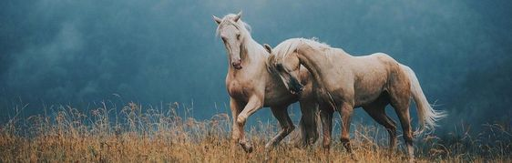

<!DOCTYPE html>
<html lang="pt-br"></html>
  <head>
    <meta charset="UTF-8" />
    <meta http-equiv="X-UA-Compatible" content="IE=edge" />
    <meta name="viewport" content="width=device-width, initial-scale=1.0" />
    <title>Espécis</title>

    <style>
        table,
        th,
        td {
          border: 1px solid   rgb(2, 53, 68);
        }

        table tbody th {
            background-color:rgb(145, 145, 145) ;
          color: rgb(0, 59, 52);
        }
        table {color: rgb(255, 247, 247);
        margin: auto;}
      </style>

        <link rel="stylesheet" href="estilo/estilo.css" />
  </head>
  <body>
    

    


    <hr />
    <a href="index.html">INÍCIO</a>
    <a href="cavalo.html">CURIOSIDADES</a>
    <a href="esportes.html">ESPORTES</a>
    <a href="especies.html">ESPÉCIES</a>
    
    <hr />

       <table>
        <tr>
          <th>Espécies</th>
          <th>Características</th>
          <th>Localidade</th>
        </tr>
        <tr>
          <td>Cavalo Andaluz</td>
          <td>
            Tem ossos e músculos bem desenvolvidos, com ótima harmonia corporal
          </td>
          <td>Andaluzia, na Espanha</td>
        </tr>
        <tr>
          <td>Cavalo Árabe</td>
          <td>
            Essa raça de cavalo é bastante usada para esportes olímpicos,
            apresentando desempenho superior.
          </td>
          <td>Península Arábica.</td>
        </tr>
        <tr>
          <td>Cavalo Berbere</td>
          <td>
            È um cavalo com uma constituição física um tanto diferente e que
            recebe uma série de elogios por sua força.
          </td>
          <td>Erbéria ou Magrebe, no norte do continente africano</td>
        </tr>
        <tr>
          <td>Cavalo Campolina</td>
          <td>
            o grande cavalo marchador brasileiro e com boas habilidades para
            ajudar no dia a dia de fazenda.
          </td>
          <td>Brasil</td>
        </tr>
        <tr>
          <td>Cavalo Crioulo</td>
          <td>
            Cavalos dessa raça são conhecidos por sua força e longevidade. De
            perfil dócil, esperto e tranquilo, são perfeitos para diversas
            tarefas relacionadas, por exemplo, à lida com o gado, passeios e
            longas distâncias.
          </td>
          <td>Brasil</td>
        </tr>
        <tr>
          <td>Cavalo Mangalarga Marchador</td>
          <td>
            O Mangalarga Marchador é um cavalo que possui características
            marcantes. Indicados para prática esporte, equitação, transporte e
            para a lida de gado. Além disso, são animais muito inteligentes. Por
            isso, possuem facilidade para o treinamento, sendo excelentes
            escolhas para as funções citadas.
          </td>
          <td>Brasil</td>
        </tr>
        <tr>
          <td>Cavalo Mangalarga</td>
          <td>
            Esse é um animal de sela facilmente domesticado que pode ser
            utilizado com sucesso em atividades de carga e também para
            finalizadas esportivas. Tem articulações fortes e marcha trotada.
          </td>
          <td>Brasil</td>
        </tr>
        <tr>
          <td>Cavalo Puro Sangue Inglês</td>
          <td>
            Visualmente o Puro-Sangue Inglês, ou PSI, já é muito belo, conhecido
            por ter um pelo brilhoso e sedoso com cores vibrantes. Com isso, as
            características mais simples para diferenciar das outras raças são:
            a cabeça delicada, o peito largo e grande, corpo fino, esguio e
            costas curtas.
          </td>
          <td>Inglaterra</td>
        </tr>
        <tr>
          <td>Cavalo Quarto de Milha</td>
          <td>
            Os Quarto de Milha são os mais rápidos do mundo em corridas de
            curtas distâncias, podendo alcançar a velocidade de 88 km/hora. Com
            uma média de 1,50 metros de altura, são inteligentes e muito dóceis,
            o que facilita a doma. Esses cavalos são extremamente musculosos e
            pesam cerca de 500 kg.
          </td>
          <td>Estados Unidos</td>
        </tr>
      </table>
    </head>
  </body>
</html>
